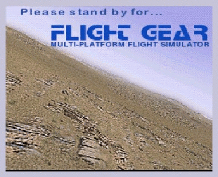

FlightGear Flight Simulator - Installation and Getting Started
Michael Basler (
pmb@epost.de
) and Martin Spott (
Martin.Spott@uni-duisburg.de
)
including contributions by
Jon Berndt (
jsb@hal-pc.org
), Bernhard Buckel (
buckel@mail.uni-wuerzburg.de
),
Cameron Moore (
cameron@unbeatenpath.net
), Curt Olson (
curt@flightgear.org
),
Dave Perry (
skidavem@mindspring.com
), Michael Selig (
m-selig@uiuc.edu
),
Darrell Walisser (
walisser@mac.com
), and others

Getting Started Version 0.61
- XXXXXXXX, Xth, XXXX
Manual was written for
FlightGear
version 0.8.0.
Contents
Preface
Installation
1
Want to have a free flight? Take
FlightGear
!
1.1
Yet Another Flight Simulator?
1.2
System Requirements
1.3
Choosing A Version
1.4
Flight Dynamics Models
1.5
About This Guide
2
Building the plane: Compiling the program
2.1
Preparing the development environment under Windows
2.2
Preparing the development environment under Linux
2.3
One-time preparations for Linux and Windows users
2.4
Compiling
FlightGear
under Linux/Windows
2.5
Compiling
FlightGear
under Mac OS X
2.6
Compiling on other systems
2.7
Installing the base package
2.8
For test pilots only: Building the CVS snapshots
3
Preflight: Installing
FlightGear
3.1
Installing the binary distribution on a Windows system
3.2
Installing the binary distribution on a Macintosh system
3.3
Installing the binary distribution on a Debian Linux system
3.4
Installing the binary distribution on a SGI IRIX system
3.5
Installing add-on scenery
3.6
Installing documentation
Flying with
FlightGear
4
Takeoff: How to start the program
4.1
Launching the simulator under Unix/Linux
4.2
Launching the simulator under Windows
4.3
Launching the simulator under Mac OS X
4.4
Command line parameters
4.5
Joystick support
4.6
A glance over our hangar
5
In-flight: All about instruments, keystrokes and menus
5.1
Starting the engine
5.2
Keyboard controls
5.3
Menu entries
5.4
The Instrument Panel
5.5
The Head Up Display
5.6
Mouse controlled actions
5.7
Some further reading for student pilots
Appendices
A
Missed approach: If anything refuses to work
A.1
FlightGear Problem Reports
A.2
General problems
A.3
Potential problems under Linux
A.4
Potential problems under Windows
B
Some words on OpenGL graphics drivers
B.1
NVIDIA chip based cards under Linux
B.2
NVIDIA chip based cards under Windows
B.3
3DFX chip based cards under Windows
B.4
An alternative approach for Windows users
B.5
3DFX chip based cards under Linux
B.6
ATI chip based cards under Linux
B.7
Building your own OpenGL support under Linux
B.8
OpenGL on Macintosh
C
Landing: Some further thoughts before leaving the plane
C.1
A Sketch on the History of
FlightGear
C.2
Those, who did the work
C.3
What remains to be done
Index
Index
[
next
]